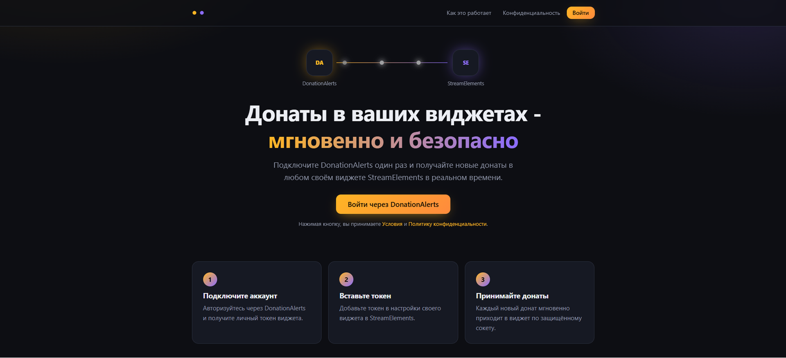
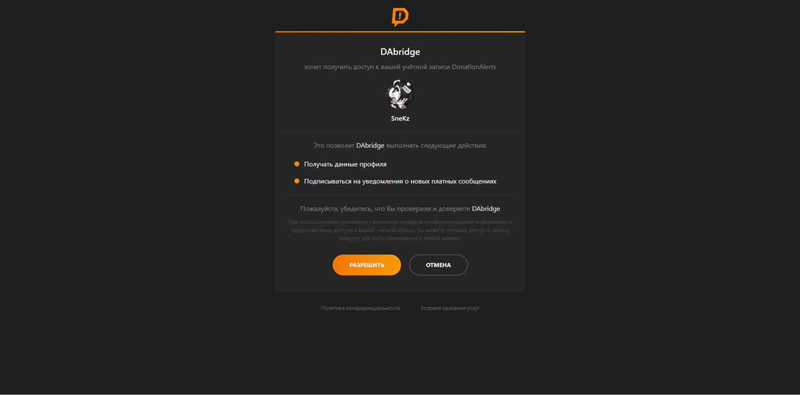
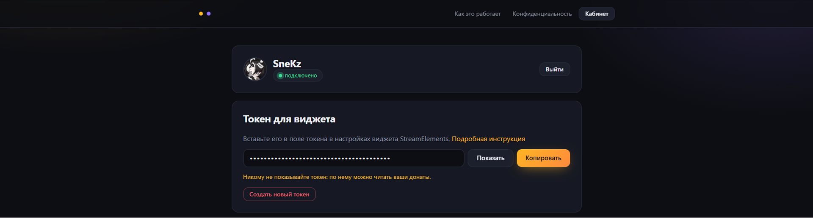
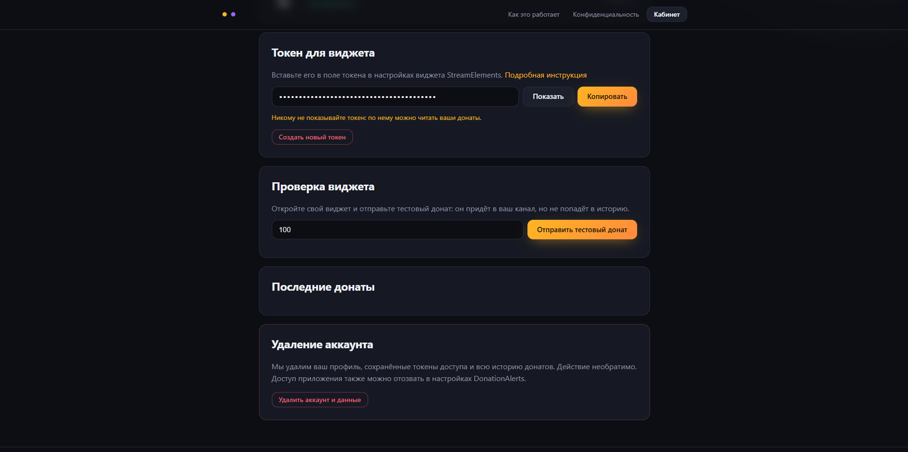

Подключение сервиса донатов
Один раз подключите аккаунт DonationAlerts — и донаты будут приходить во все ваши виджеты StreamElements в реальном времени. Это общая инструкция для всех виджетов, которым нужны донаты.
Откройте сервис
Перейдите на shinoii.ru и нажмите кнопку «Войти» в правом верхнем углу.

Подтвердите доступ
На странице DonationAlerts нажмите «Разрешить». Сервис запрашивает только чтение профиля и подписку на новые донаты — выводить деньги или менять настройки аккаунта он не может.

Скопируйте токен
После входа вы попадёте в личный кабинет. В блоке «Токен для виджета» нажмите «Копировать». Рядом с вашим именем должен гореть статус «подключено».

Вставьте токен в виджет
Откройте настройки виджета в StreamElements, найдите поле Токен DonationAlerts и вставьте токен без пробелов. Сохраните оверлей.
Проверьте тестовым донатом
В личном кабинете укажите сумму и нажмите «Отправить тестовый донат». Виджет должен отреагировать сразу. Тестовые донаты не попадают в историю кабинета.

Если не работает
- Статус в кабинете не «подключено» — блок «Почему нет соединения» покажет причину; чаще всего помогает «Войти заново».
- Проверьте, что токен вставлен целиком и без пробелов в начале и в конце.
- Тестовый донат из кабинета доходит, а настоящий нет — убедитесь, что вы вошли тем аккаунтом DonationAlerts, на который идут донаты.
Безопасность токена
Токен — это «пароль» к вашему каналу донатов: никому его не показывайте и не публикуйте на скриншотах. Если токен попал не в те руки, нажмите в кабинете «Создать новый токен» — старый перестанет работать, а новый нужно вставить в виджеты заново.
Аккаунт и все сохранённые данные можно удалить в кабинете в любой момент. Дополнительно можно отозвать доступ приложения в настройках DonationAlerts.